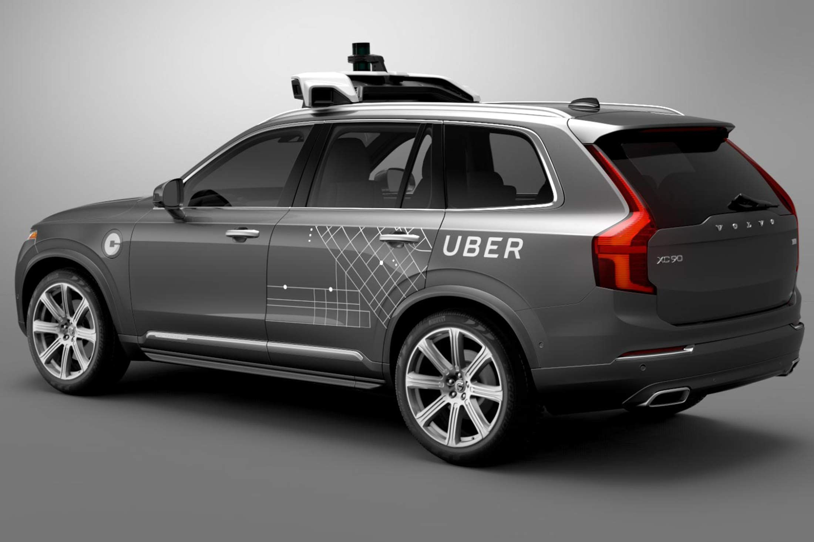
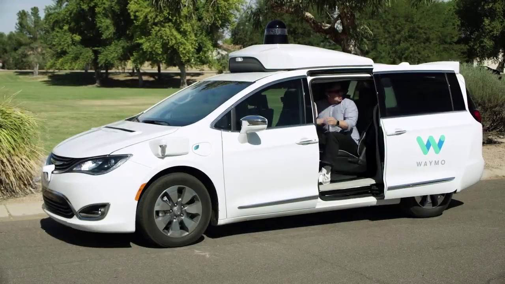
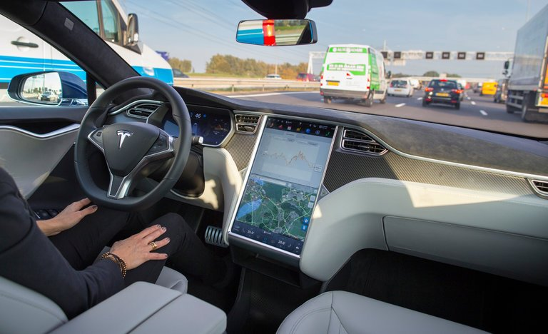

Case Studies
-
Nvidia
Nvidia was originally a company that manufactures graphics processing unit (GPU), which is “a specialized electronic circuit designed to rapidly manipulate and alter memory to accelerate the creation of images in a frame buffer intended for output to a display device.” [1]
However, after Nvidia released a parallel computing platform called ‘CUDA’, which allows scientists and researchers to use GPUs for general purpose processing, it became the most influential company in deep learning (artificial intelligence), data analytics and etc. Since it is nearly impossible and inefficient to explicitly write an autonomous driving system, most companies uses deep learning to develop a driverless car system. Nvidia, instead of developing its own autonomous car, decided to release an AI platform for autonomous driving called ‘Nvidia Drive’, which are currently used in over 320 companies including Volkswagen, Mercedes-Benz, Audi, Tesla, Volvo and Uber. Uber, for instance, is planning on launching automated vehicles by mid-2019, according to the new CEO Khosrowshahi who spoke at Bloomberg's The Year Ahead Event. [2] -
Google
Unlike Nvidia, Google built their own autonomous cars from scratch. The project was started in 2009, aiming to build a fully-functioning autonomous system that can run 100-mile route. In 2013, Google announced that vehicles with the system were driven more than 300,000 miles on freeways with test drivers. In 2015, they revealed a prototype that doesn’t have any steering wheel, pedals and drivers. In 2016, Google’s autonomous car project got larger and became a separate company called ‘Waymo’. And their driverless taxi service will be launched very soon (later this year), starting in Arizona after Arizona’s department of transportation gave Waymo a permit to run a TNC (transportation network company). [3] [4]
-
Tesla
All of the Tesla’s cars have autopilot system in them. Tesla’s autopilot feature was first introduced in 2015, which is capable of autonomous driving in limited environments. In 2016, Tesla included new hardwares new hardware that includes 8 surround cameras, 12 ultrasonic sensors, a forward-facing radar with enhanced processing and Nvidia Drive PX 2 GPU for CUDA based computation. [5]
Even though Tesla’s hardwares are capable of fully autonomous driving systems, their self-driving softwares are far behind from other companies. Their enhanced autopilot can be used only in highway, and the drivers should put their hands on the wheel while using autopilot. (Which is classified as Level 2 in autonomy). Unlike the common anticipation that Tesla will make a lead in autonomous car race, Tesla was ranked last out of 19 companies in the recent Navigant Research. [6]
References
- SAE International / AUTOMATED DRIVING LEVELS OF DRIVING AUTOMATION J3016 [1]
- Kersten Heineke, Philipp Kampshoff, Armen Mkrtchyan and Emily Shao / Self-driving car technology: When will the robots hit the road? [2]
- Matt Burgess / When does a car become truly autonomous? Levels of self-driving technology explained [3]